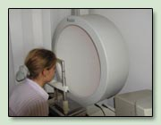
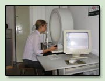

Komputerowe badanie pola widzenia zwane także perymetrią polega na wykreśleniu na schematach pola widzenia, czyli obszaru widzianego nieruchomym okiem.
Perymetria pozwala na precyzyjne określenie i zanalizowanie progu czułości siatkówki w różnych jej punktach w stosunku do poziomu prawidłowego. Badanie to wykazuje ewentualne ubytki ( zarówno miejsca jak i ich wielkość ) w polu widzenia.
Podczas badania komputerowego pola widzenia pacjent zostaje posadzony naprzeciw ekranu w kształcie półkuli. Jedno oko ma zasłonięte natomiast drugim patrzy prosto przed siebie. W momencie gdy na którejś z części ekranu pojawia się punkt świetlny natychmiast musi nacisnąć przycisk. Sygnały są rejestrowane przez komputer, który po zakoczeniu badania sporządza wydruk pola widzenia ( ubytki w polu widzenia są zaznaczone ciemnymi plamami). Wydruk jest czytelny i łatwy w interpretacji.
|  |  |
Wskazania do badania pola widzenia mogą być:
Najczęstszym wskazaniem do wykonania badania jest podejrzenie lub wykrycie u pacjenta jaskry.
Jaskra jest chorobą oczu, która przebiega pod różnymi postaciami. Jednak wszystkie typy jaskry łączy jedna cecha - postępujący zanik nerwu wzrokowego. Przy braku odpowiedniego leczenia , jaskrowy zanik nerwu powoduje nieodwracalną utratę wzroku.
Zbyt wysokie ciśnienie wewnątrzgałkowe jest ważnym czynnikiem uszkadzającym nerw wzrokowy.
Kontrola skuteczności leczenia jaskry nie może sprowadzać się do pomiaru ciśnienia wewnątrzgałkowego. Musi ona polegać również na sprawdzaniu czy jaskrowe zmiany w nerwie wzrokowym nie powoduję ubytków w polu widzenia.
Głównym czynnikiem ryzyka w jaskrze jest wiek. Najczęściej rozwija się u osób po 40 roku życia ( ale może również wcześniej).
Duże znaczenie ma podłoże genetyczne ( jaskra w rodzinie ).
Predyspozycje do zachorowania mają również osoby z niskim ciśnieniem krwii, nadciśnieniem tętniczym, maj±cy zimne dłonie, zimne stopy oraz migreny.
Pacjent z rozpoznaną jaskrą powinien wykonywać badanie pola widzenia raz na pół roku.